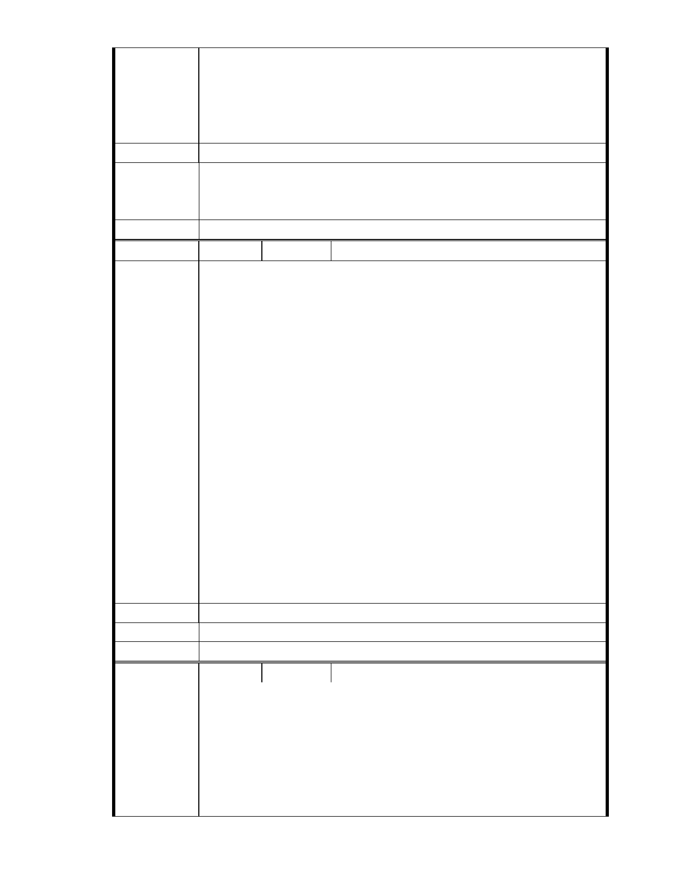

畫後，便徑送 貴委員會審議。
六、本大廈緊鄰慈濟內湖園區，變更後之負面影響最鉅，請貴會通知本
大廈管理委員會列席參與該案後續所有審議、專案小組會議及大會，並
請依政府資訊公開法將會議時間、地點，以及會議資料、紀錄等相關資
訊提前公開上網，俾便閱覽。
建議辦法
一、相關陳情意見將納入本案審查人民意見，依法定程序辦理。
市 府 說 明 二、後續審理程序將要求申請人加強與在地區民、社會大眾，就基地現
況、規劃方案及環境助益作為等方面加強溝通。
委 員 會 決 議 同編號 1。
編號
陳情理由
149 陳情人 大湖內閣大廈管理委員會
發文日期：中華民國 101 年 10 月 16 日
發文字號：內慈字第 1011005 號
主旨：有關「變更臺北市內湖區成功路五段大湖公園北側部分保護區及
道路用地為社會福利特定專用區主要計畫案」暨「擬訂臺北市內湖區成
功路五段大湖公園北側社會福利特定專用區細部計畫案」，依據貴會審
議結論，本案主要計畫、細部計畫、開發計畫應予以個別審議分開處理
之方式辦理，詳如說明，敬請查照。
說明
一、依據 2012 年 9 月 24 日本大廈第 16 屆第 1 次臨時管委會決議辦理。
二、依據貴委員會第 620 次委員會議做成「後續處理原則與方向建議」2 :
「本案未來宜朝主要計畫、細部計畫、開發計畫予以個別審議處理之方
式辦理」之規定，本案主要計畫應與細部計畫、開發計畫應分開辦理。
三、依據本案專案小組第四次審查會議結論一：「本案都市計畫變更之審
議應分二階段處理，即主要計畫保護區變更為社會福利特定專用區之適
宜性先經委員會（大會）原則同意後，再續予討論、審查細部計畫之內
容。」及第七次專案小組審查會會議結論三：「本案細部計畫俟主要計畫
審議通過後，再依規定程序審議。」之規定，本案細部計畫應俟主要計
畫審議通過後，再依規定程序審議。
建議辦法
市 府 說 明 相關陳情意見將納入本案審查人民意見，依法定程序辦理。
委 員 會 決 議 同編號 1。
編
號 150
陳情人 大湖內閣大廈管理委員會
發文日期：中華民國 101 年 10 月 17 日
發文字號：內慈字第 1011006 號
主旨：有關「變更臺北市內湖區成功路五段大湖公園北側部分保護區及
陳情理由
道路用地為社會福利特定專甩區主要計畫案」依據臺北市土地使用分區
管制規則第 75 條第 1 項第 2 款第 3 目規定，保護區依法得附條件允作
為社會福利設施使用，本案無須辦理保護區變更，詳如說明，敬請查照。
說明
- 220 -